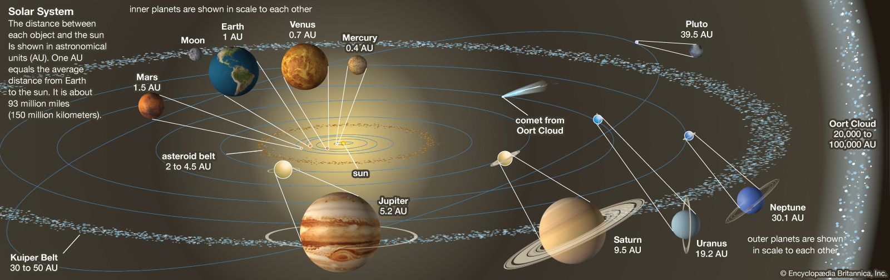
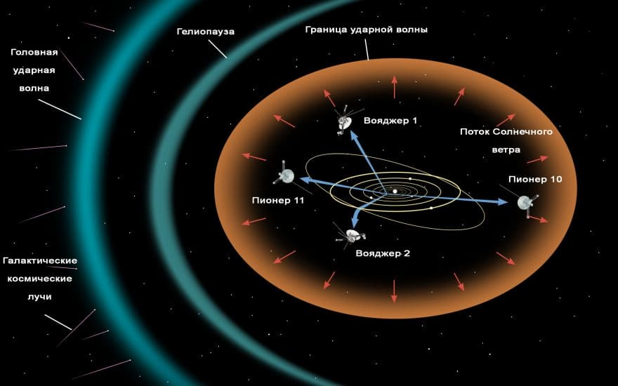

Со́лнечная систе́ма — планетная система, включает в себя центральную звезду — Солнце — и все естественные космические объекты, вращающиеся вокруг Солнца. Она сформировалась путём гравитационного сжатия газопылевого облака примерно 4,57 млрд лет назад. В Солнечной системе существуют две области, заполненные малыми телами. Пояс астероидов, находящийся между Марсом и Юпитером, схож по составу с планетами земной группы, поскольку состоит из силикатов и металлов. Крупнейшими объектами пояса астероидов являются карликовая планета Церера и астероиды Паллада, Веста и Гигея. За орбитой Нептуна располагаются транснептуновые объекты, состоящие из замёрзшей воды, аммиака и метана, крупнейшими из которых являются Плутон, Седна, Хаумеа, Макемаке, Квавар, Орк и Эрида. В Солнечной системе существуют и другие популяции малых тел, такие как планетные квазиспутники и троянцы, околоземные астероиды, кентавры, дамоклоиды, а также перемещающиеся по системе кометы, метеороиды и космическая пыль.

Центральным объектом Солнечной системы является Солнце — звезда главной последовательности спектрального класса G2V, жёлтый карлик. В Солнце сосредоточена подавляющая часть всей массы системы (около 99,866 %), оно удерживает своим тяготением планеты и прочие тела, принадлежащие к Солнечной системе. Четыре крупнейших объекта — газовые гиганты — составляют 99 % оставшейся массы (при этом большая часть приходится на Юпитер и Сатурн — около 90 %). Большинство крупных объектов, обращающихся вокруг Солнца, движутся практически в одной плоскости, называемой плоскостью эклиптики. В то же время кометы и объекты пояса Койпера часто обладают большими углами наклона к этой плоскости. Все планеты и большинство других объектов обращаются вокруг Солнца в одном направлении с вращением Солнца (против часовой стрелки, если смотреть со стороны северного полюса Солнца). Есть исключения, такие как комета Галлея. Самой большой угловой скоростью обладает Меркурий — он успевает совершить полный оборот вокруг Солнца всего за 88 земных суток. А для самой удалённой планеты — Нептуна — период обращения составляет 165 земных лет.
Наряду со светом, Солнце излучает непрерывный поток заряженных частиц (плазмы), известный как солнечный ветер. Этот поток частиц распространяется со скоростью примерно 1,5 млн км в час, наполняя околосолнечную область и создавая у Солнца некий аналог планетарной атмосферы (гелиосферу), которая имеется на расстоянии по крайней мере 100 а.е. от Солнца. Она известна как межпланетная среда. Проявления активности на поверхности Солнца, такие как солнечные вспышки и корональные выбросы массы, возмущают гелиосферу, порождая космическую погоду. Крупнейшая структура в пределах гелиосферы — гелиосферный токовый слой; спиральная поверхность, созданная воздействием вращающегося магнитного поля Солнца на межпланетную среду. Магнитное поле Земли мешает солнечному ветру сорвать атмосферу Земли. Венера и Марс не имеют магнитного поля, и в результате солнечный ветер постепенно сдувает их атмосферы в космос. Корональные выбросы массы и подобные явления изменяют магнитное поле и выносят огромное количество вещества с поверхности Солнца — порядка 109—1010 тонн в час. Взаимодействуя с магнитным полем Земли, это вещество попадает преимущественно в верхние приполярные слои атмосферы Земли, где от такого взаимодействия возникают полярные сияния, наиболее часто наблюдаемые около магнитных полюсов. Межпланетная среда является местом формирования, по крайней мере, двух дископодобных областей космической пыли. Первая, зодиакальное пылевое облако, находится во внутренней части Солнечной системы и является причиной, по которой возникает зодиакальный свет. Вероятно, она возникла из-за столкновений в пределах пояса астероидов, вызванных взаимодействиями с планетами. Вторая область простирается приблизительно от 10 до 40 а.е. и, вероятно, возникла после подобных столкновений между объектами в пределах пояса Койпера.
